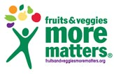
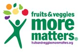

Business History
F.C. Bloxom Company began selling produce in Seattle in 1934. Fred C. Bloxom had Yakima relatives involved in agriculture who needed a representative in the terminal market on Western Avenue in Seattle, Washington. Today F.C. Bloxom Company has a 17,000 square foot facility in the heart of industrial Seattle. We are your single call for all your fruit, vegetable, and specialty produce needs.
Relationships
F.C. Bloxom Company's long-term relationships with growers, shippers, packers, and trucking and shipping lines as well as our receivers, smooth what can be a complex process of determining the right product for the right market and getting it there in a timely manner.
Experience
F.C. Bloxom Company can facilitate your entry and establishment into a marketplace, domestic or foreign. F.C. Bloxom Company exports over fifty commodities of fresh fruit, vegetables, and nuts to over twenty countries worldwide. Much of our domestic staff of traders have worked together since the 1980’s. With almost 40 years of combined experience, our export staff has enabled us to meet the challenging demands of our diverse clientele in South America, Europe, the Middle East and Asia, from Brazil to India.
 
